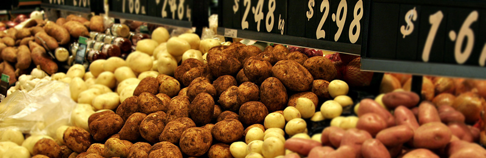
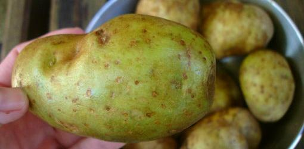

All About Potatoes
Many people avoid white potatoes due to their high glycemic index, because they're afraid of toxins, or because they're afraid of carbohydrates in general. (Or simply because they think sweet potatoes are better). However, the humble spud - if stored and prepared properly - shouldn't be ignored.
Potatoes are:
- Tubers from the Solanaceae family.
- The 4th most important food crop in the world (behind wheat, maize, rice).
- Grown in 149 countries. (I didn't even know 149 countries existed.)
Commercial potatoes originated thousands of years ago in South America and are now a dietary staple for over one billion people. Various cultures have relied on potatoes as their number one food source.
Interestingly, sweet potatoes are not actually "potatoes". They are a root from the Convolvulaceae family, a different food family entirely. They:
- Take 9-12 months to mature and don't store as well as potatoes.
- Likely originated thousands of years ago in Peru.
- Are a staple food source in Okinawan diets (as opposed to rice, the main starch in most of Japan).
- Have not been associated with any form of glycoalkaloid toxicity. (For more on glycoalkaloids, see below.)
Do you prefer white or sweet potatoes? Join the conversation on Facebook
Potato Consumption
While some proclaim that potato consumption in North America is excessive, it isn't. Americans consume more desserts than potatoes.
On average, adults consume 36 - 93 calories from fresh potatoes per day (depending on gender). Meanwhile, we eat 138 calories daily, on average, from cookies, cakes and other grain-based desserts.
Fresh potato consumption has decreased over the past 40 years.
- 1970: 61 lbs.
- 1996: 50 lbs.
- 2008: 36 lbs.
Processed potato consumption (e.g., French Fries, potato chips, etc) has increased during this same time period.
Nutrients and Satiety
While serving as an army pharmacist during the Seven Year War (1754-1763), Frenchman Antoine-Augustin Parmentier was taken prisoner by the Prussians. Served a diet composed almost exclusively of potatoes, he survived.
In fact, on his release several years later, he was actually in good health. (He must also have been consuming foods with vitamins A and D, as these nutrients are not found in potatoes.)
He went on to become a huge proponent of potatoes as ordinary food in France. Until he came along, the French considered potatoes to be worthless, except as hog feed. Thanks to him, we have Potatoes Parmentier.
And then there is Chris Voight, the man who ate nothing but potatoes for two months. He lost weight and improved lab markers. See here and here for more.
One medium potato contains 79% water, 10 vitamins and minerals, 4 grams of fiber, and 4 grams of protein. In fact, you could eat only potatoes and still meet your basic protein needs.
Potatoes are similar in nutrient density to other starchy vegetables and contain low levels of phytic acid. This is relevant because phytic acid inhibits the absorption of nutrients. In other words, potatoes don't inhibit you from taking in the nutrients you need.
Fresh potatoes tend to be one of the most satiating foods based on satiety studies - both short term and long term, subjective and objective. The calorie density of potatoes is low and someone would need to eat about 5 pounds to reach 2000 calories.
Sound impressive? It is. But here's the problem: Processed potato products don't have the same effect on satiety. When potatoes become a vehicle for salt, oil, butter, sour cream, and bacon, they are easier to overeat.
Check out how different varieties of potatoes compare:
| Preparation | Calories | % Calories from fat |
|---|---|---|
| Mashed Potatoes (resturant) | 460 | 65% |
| Loaded Baked Potato (sour cream, butter, bacon, salt) | 430 | 36% |
| French fries (medium, restaurant) | 380 | 45% |
| Potato chips (2 ounces) | 320 | 56% |
| Baked Potato (restaurant) | 260 | 7% |
| Baked Potato (home) | 160 | 1% |
How a potato is cooked and served influences how it's digested in the body, as well as its glycemic index.
Starch molecules in potatoes swell during cooking, allowing digestive enzymes to assimilate them more effectively. Cooling potatoes changes the starch structure, making it more resistant to digestion. (For more information about this, see All About Resistant Starch.)
Glycemic Index
The glycemic index (GI) is a measure of how quickly glucose appears in the bloodstream after eating a specific amount of a carbohydrate dense food.
It's thought that higher GI foods are more likely to lead to blood sugar and insulin management problems. While lower GI foods are better for sugar and insulin management.
White potatoes (and sweet potatoes) score fairly high on the GI scale. In fact, both foods score higher than table sugar.
However, this score varies wildly by type of potato and preparation method. For example, baked potatoes tend to score higher than boiled. New, and some varieties of white potatoes, score the lowest.
Because of the relatively high GI of potatoes, some people avoid them for fear of blood sugar swings and insulin problems. However, the GI is only valid when a food is eaten by itself. And most foods eaten with potatoes (meat, vegetables, etc) lower the GI of the entire meal significantly, making the meal a low glycemic index one and negating these concerns.
Glycoalkaloids
Before we all go invest in potato crops, let's not forget about glycoalkaloids (GAs). GAs are nitrogen-containing plant metabolites that help defend against pests, pathogens, and so on. When consumed to a point of toxicity, they disrupt cell membranes and inhibit neurotransmission.
More than 80 GAs have been identified in various potato species. The two most common are a-chaconine and a-solanine. GAs accumulate due to extreme climate conditions, insect infestation, and exposure to artificial light/sunlight.
If you pay close attention, you'll notice that potatoes will start to turn a light shade of green when left sitting in the sunlight. This is solanine. When this happens, they should not be consumed. It's critical to store potatoes in cool, dark, dry areas to prevent increased GAs.
Potatoes and other plants of the Solanum genus contain higher amounts of GAs (when compared to other plant foods). Skins, peels, leaves, and flowers of potatoes contain the most GAs. The actual potato flesh tends to be low.
Peeling a potato significantly reduces GAs. That's because most GAs concentrate in the first millimeter of the potato (from the outside working in).
Cooking methods influence GAs less. The decomposition temperature of GAs is 190-285 C/374-545 F, so boiling and microwaving potatoes can slightly decrease GA content.
Deep frying potatoes with peels allows GAs to migrate from the peels into the oil. Repeated deep frying can thus concentrate GAs up to three times. And since it's more common for people to "overeat" potato chips and French Fries, it's easier to rack up GAs from these sources.
In countries where fried potato consumption is higher, irritable bowel disease is often higher too. Mice predisposed to intestinal inflammation that are fed a diet of fried potato skins get an irritated intestine.
Small potatoes tend to contain more GAs than larger ones. Potatoes are continually being modified to reduce GA levels via genetic modification and interspecies hybridization.
Commercial potatoes must contain less than 20 mg of GAs per 100 g of potato before they can be sold. If a potato tastes bitter, it's probably higher in GAs.
Consuming more than 2 mg of GA per kg of body weight might lead to headache, vomiting, diarrhea, restlessness, confusion, and hallucinations. At 3 mg per kg of body weight we are talking potential death.
Daily intake of GAs from potatoes in the US and the UK is approximated to be 13-14 mg. Clearance from the body takes about 24 hours.
Despite all their negative effects, GAs may also have beneficial effects, depending on dose and condition, including:
- Anti-inflammatory, anti-fever, & anti-pain - GAs may act as anti-histamines.
- Anti-cholesterol - GAs may bind and excrete cholesterol from the GI tract.
- Anti-fungal & anti-bacterial - GAs might offer chemical defense against pathogens.
- Anti-cancer - GAs may have a chemoprotective effect and induce apoptosis.
- Anti-viral - creams containing certain GAs may protect against the herpes virus.
Acrylamide, acrolein & lectins
Acrylamide and acrolein are also toxins to the body. Both are formed with heat treatment of certain foods, including potatoes.
The higher the cooking temperature and the longer the cooking duration, the more acrylamide and acrolein generated. (For more, see All About Cooking & Carcinogens.)
Potatoes also contain lectins (proteins that defend against microorganisms). In high amounts these can irritate the GI tract. (For more, see All About Lectins.)
As people's sensitivities to GAs, acrylamide, acrolein, and lectins vary, it's important to monitor your own response to potatoes. (Or any food, for that matter.)
In other words, if potatoes make you feel ill, try removing the peels. If the feelings persist, you may want to cut back on your intake.
Organic potatoes
Conventional potatoes may be sprayed with bud nip (chlorpropham) to prevent budding. Bud nip is also toxic when ingested.
Eleven-year-old Elise Gladcock discovered this while researching her science fair project. I didn't learn about it until my twenties.
According to the Environmental Working Group, it's probably wise to choose organic potatoes. With nearly 2 billion dollars spent annually to protect vulnerable potatoes, we can assume this results in lots of chemicals on conventional crops.
Since organic potatoes are exposed to fewer pesticides, they might contain a slightly higher proportion of GAs. That's because their own defense mechanisms kick in when they aren't given the artificial armor of the pesticides.
Regular or organic potatoes? Join the conversation on Facebook
Environmental impact
Let's say you have 2.5 acres of farm land. If you grew potatoes, you could meet the energy needs of 22 people. If you used this land to produce beef or eggs, you could meet the energy needs of 1 person.
Potatoes produce more energy per day on a given area of land than any other crop. Compare to a grain crop, for example. Only 33% of a grain plant is edible, versus 75% of a tuber plant.
Potatoes take 2-3 months to mature and can be stored for long periods of time. They are an efficient means of converting land, water, and labor into nutrition.
Speaking of water...
- It takes 25 litres of water to produce one potato.
- It takes 40 litres to produce one slice of bread.
- It takes 40 litres to produce one glass of milk.
- It takes 70 litres to produce one apple.
- It takes 135 litres to produce one egg.
- It takes 2400 litres to produce one hamburger.
Summary and recommendations
- Potatoes are nutrient rich, have sustained many cultures, and are an environmentally friendly food. Plus, they're satiating and difficult to overeat. And, when eaten as part of a meal, should present no glycemic index problems.
- Potatoes, just like nearly every other whole food, contain toxins. The body is designed to handle lower amounts of plant toxins with no problem. If you're particularly sensitive to potatoes, try peeling them. Or eating fewer of them.
- Potatoes need to be stored in a dark, cool location. Cut off any green areas, choose larger potatoes, and peel them to decrease toxins (especially if you eat potatoes often).
- If you are unsure how your body responds to potatoes, try building in smaller amounts without the peel.
- If you have no desire to include potatoes in your diet and you are meeting all of your nutrition related goals, then don't eat potatoes and instead just memorize some potato facts from this article to impress your friends at parties.
Extra credit
- Ever heard of golden rice? There is also a "golden potato" - a genetically engineered version of a potato higher in carotenoids.
- Organic farming methods might lead to fewer insects and larger plants among potato crops.
- GA toxicity may interfere with certain neuromuscular blocking medications.
- A potential benefit to genetically modified potatoes is creating potatoes with fewer GAs.
- Tobacco is in the same plant family as the potato.
- Feeding potato peels to animals can cause toxicity problems.
- To grow potatoes, you plant an actual potato, not seeds.
- Humans don't digest raw potatoes very well. Uncooked potatoes contain enzyme inhibitors.
References
Click here to view the information sources referenced in this article
Erdmann J, et al. Food intake and plasma ghrelin response during potato-, rice- and past-rich test meals. Eur J Nutr 2007;46:196-203.
Abraham K, et al. Toxicology and risk assessment of acrolein in food. Mol Nutr Food Res 2011;55:1277-1290.
Potato consumption lower than expected. Jeff Nedelman. April 20, 2012.
Novick J. Do potatoes cause diabetes. May 16, 2012.
Tey SL, et al. Long-term consumption of high energy-dense snack foods on sensory-specific satiety and intake. Am J Clin Nutr 2012;95:1038-1047.
Milner SE, et al. Bioactivities of glycoalkaloids and their aglycones from Solanum species. J Agric Food Chem 2011;59:3454-3484.
Farre G, et al. Nutritious crops producing multiple carotenoids – a metabolic balancing act. Trends in Plant Science 2011;16:532-540.
Doughton S. WSU study on potato farming gives organic way a boost. June 30, 2010.
Fernandes G, et al. Glycemic index of potatoes commonly consumed in North America. J Am Diet Assoc 2005;105:557-562.
Patel B, et al. Potato glycoalkaloids adversely affect intestinal permeability and aggravate inflammatory bowel disease. Inflammatory Bowel Diseases 2002;8:340-346.
Whole Health Source. Potatoes and human health. September-October 2010. Part 1, Part 2, Part 3.Roots, tubers, plantains and bananas in human nutrition. 1990. Ch. 7. Toxic substances and anti-nutritional factors.
Mensinga TT, et al. Potato glycoalkaloids and adverse effects in humans: an ascending dose study. Regulatory Toxicology and Pharmacology 2005;41:66-72.
Friedman M. Potato glycoalkaloids and metabolites: Roles in the plant and in the diet. J Agric Food Chem 2006;54:8655-8681.
Korpan YI, et al. Potato glycoalkaloids: true safety or false sense of security? Trends in Biotechnology 2004;22:147-151.
Willcox DC, et al. The Okinawan diet: Health implications of a low-calorie, nutrient-dense, antioxidant-rich dietary pattern low in glycemic load. J Am Coll Nutr 2009;28:500S-516S.
Iablokov V, et al. Naturally occurring glycoalkaloids in potatoes aggravate intestinal inflammation in two mouse models of inflammatory bowel disease. Dig Dis Sci 2010;55:3078-3085.
Barceloux DG. Medical Toxicology of Natural Substances: Foods, Fungi, Medicinal Herbs, Toxic Plants, and Venomous Animals. Hoboken, NJ: John Wiley & Sons, 2008. pp. 77-83. Potatoes, Tomatoes, and Solanine Toxicity (Solanum tuberosum L., Solanum lycopersicum L.)
Mazess RB & Baker PT. Diet of Quechua Indians living at high altitude: Nu Noa, Peru. Am J Clin Nutr 1964;15:341-351.
St. Pierre B. Potatoes - The misunderstood carb.
Chapagain A & Hoekstra. Water footptrints of nations volume one: main report.
Pramod SN, et al. Potato lectin activates basophils and mast cells of atopic subjects by its interaction with core chitobiose of cell-bound non-specific immunoglobulin E. Clin Exp Immunol 2007;148:391-401.
Spezzatino. Volume 16. Potatoes.Reader J. Potato: a history of the propitious esculent. 2008. Yale University Press.Tudor A. Sweet potato power. 2012. Victory Belt Publishing.
Sho H. History and characteristics of Okinawan longevity food. Asia Pacific J Clin Nutr 2001;10:159-164.Executive summary of chaconine & solanine. National Toxicology Program. February 17, 2005.
The pros and cons of munching on raw potatoes. UT San Diego. August 5, 2009.

Change your life forever!
Begin today with our free 5-day nutrition course.

You my friend, are awesome!
Thanks for signing up. You will recieve the course shortly.
*Select the program that applies to you